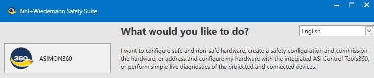
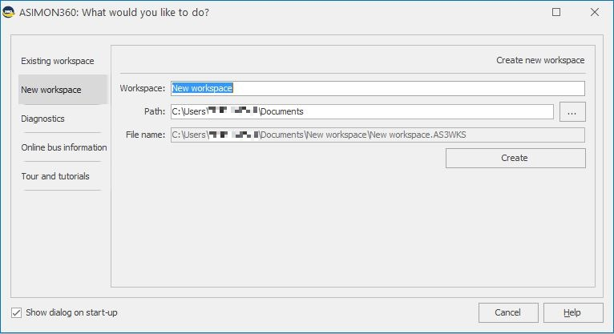
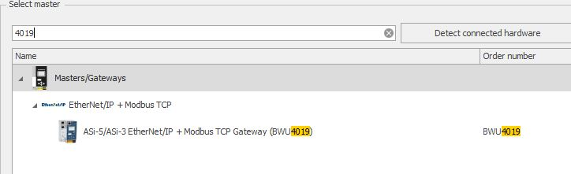
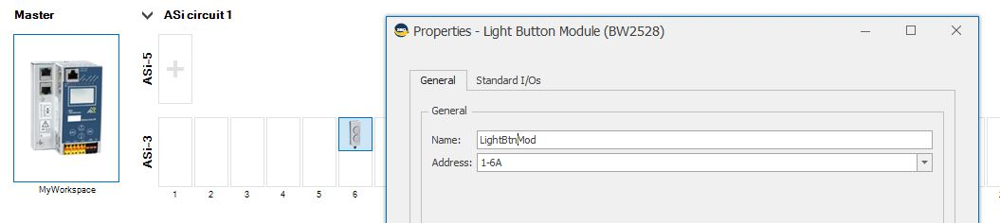
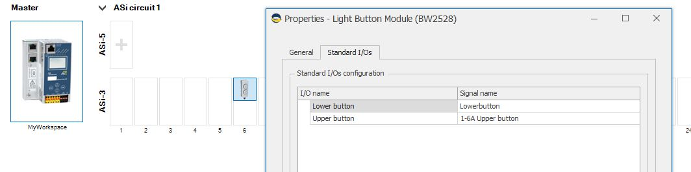
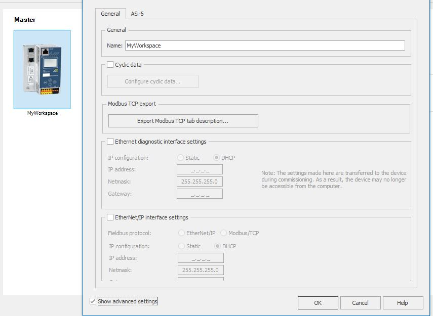

Use the ASi-5/ASi-3 Modbus TCP gateway to connect sensors and actuators to the BusMaster function block using Modbus scanner.
First follow the procedure below to link your devices to the ASi gateway using Bihl+Wiedemann Safety Suite © software.
After configuration of the ASi devices with Bihl+Wiedemann Safety Suite © software, integrate the ASi devices in EcoStruxure Automation Expert software by following the second procedure.
The procedure below presents the standard method to configure ASi-5/ASi-3 Modbus TCP gateway.
For more options or more information, contact support@bihl-wiedemann.com to obtain EtherNet/IP + Modbus TCP-Gateways Part 2: Modbus TCP Compact Manual.
| Step | Action |
|
1 |
Install Bihl+Wiedemann Safety Suite © software (version 5.0.5.11-882.273 or later) following Installation, Activation and Management of Software on a PC or on a Virtual Machine manual.
NOTE: Installation, Activation and Management of Software on a PC or on a Virtual Machine manual is available on Bihl+Wiedemann Safety Suite website, under the name “Software Installation Instructions” in Downloads tab.
|
|
2 |
Click ASIMON360.  |
|
3 |
Create a new workspace.  |
|
4 |
Select the ASi-5/ASi-3 EtherNet/IP+Modbus TCP gateway with reference BWU4019.  |
|
5 |
In the pop-up window, rename the gateway in order to find it more easily in EcoStruxure Automation Expert software. |
|
6 |
Add a slave from the catalog by clicking a slave emplacement. |
|
7 |
Rename the slave in the General tab and in the Standard I/Os tab in order to find it more easily in EcoStruxure Automation Expert software.   |
|
8 |
Repeat steps 5 to 7 for each device you want to add. You can connect up to 96 ASi slaves per circuit if you are using ASi-5 slaves only.
You can connect up to 62 ASi slaves per circuit if you are using:
|
|
9 |
Once you added all devices you want to link to the gateway, click the ASi-5/ASi-3 EtherNet/IP+Modbus TCP gateway image. |
|
10 |
Save your project in xml format on your desktop by double clicking Export Modbus TCP register description....
NOTE: Check the box Show advanced settings if you do not see Export Modbus TCP register description....
 |
|
11 |
Integrate your devices to the EcoStruxure Automation Expert software following the procedure below. |
| Step | Action |
|
1 |
In EcoStruxure Automation Expert software, open the project in which you want to add ASi gateways. |
|
2 |
Follow steps 1 to 6 from Modbus Software Gateway procedure. |
|
Right click MODBUSGENTCPS and select Modbus gateway to import the xml file created with ASIMON360 software. A Confirmation dialog asks you if you want to generate the associated Symlinks for each imported variable.
NOTE: In most cases you will select No and not generate symlinks. In this case you will instead use the application defined symlinks (already defined in your CATs). The HW configuration will be generated and you can then map your symlinks. If you select Yes and generate the symlinks, they will be created directly in the current resource and mapped automatically to the HW configuration.
Result: EcoStruxure Automation Expert software creates the necessary hardware CATs to manage the IO data exchange between the device already set in EcoStruxure Automation Expert software and the ASi gateway. The information imported from ASIMON360 software is represented in the Hardware Configuration editor as extracted bits stored in fixed read, write, control and diagnostic registers. Each register contains up to 16 bits.
NOTE: Refer to the Comment column to get information about each extracted bit.
NOTE: For more information on slaves and registers, contact support@bihl-wiedemann.com to obtain EtherNet/IP + Modbus TCP-Gateways Part 2: Modbus TCP Compact Manual.
|
|
|
3 |
You can now configure the Init behavior (connecting the first block to the right initialization event) and then start using the function blocks inside your application. |